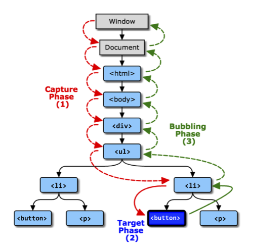
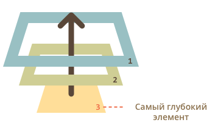
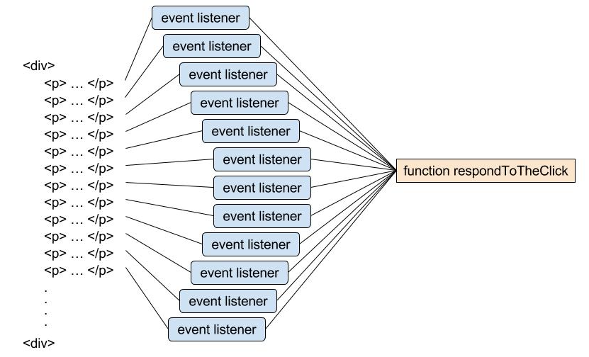
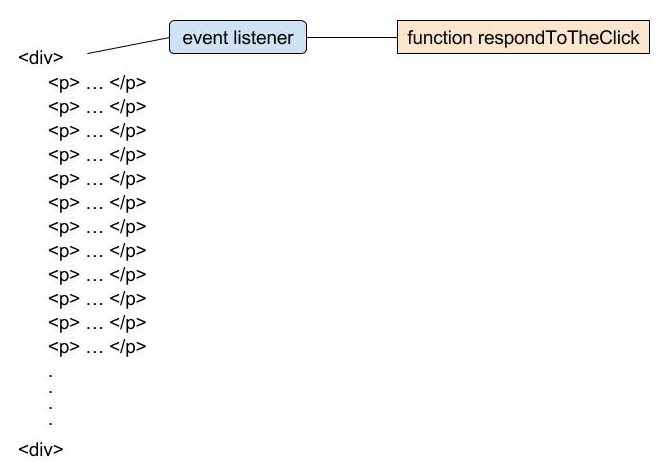
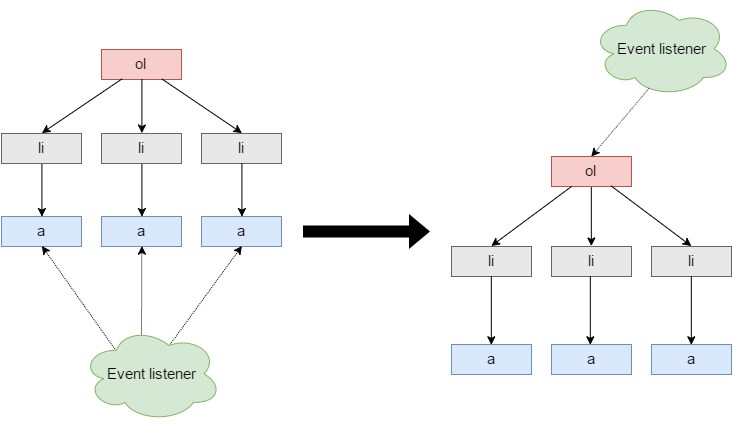

1. Поширення подій
Поширення подій (event propagation) — важлива, але незрозуміла тема, коли мова йде про події. Це всеосяжний термін, який містить три різні етапи життя події: затоплення, таргетинг і спливання.
Поширення події двонаправлено - воно починається на window, йде до цільового
елементу і закінчується на window. Поширення часто неправильно
використовується як синонім стадії спливання. Кожен раз, коли відбувається
подія, відбувається його поширення.
При настанні події, воно проходить через три обов'язкові фази:
- Capture phase — подія починається на
windowі тоне (проходить через всі вузли-предки) до найглибшого цільового елемента, де відбулася подія. - Target phase — подія дійшла до найглибшого цільового елемента. Цей етап включає тільки повідомлення вузла, на якому відбулася подія.
- Bubbling phase — заключна фаза, подія спливає від самого глибокого,
цільового елемента, через всі вузли-предки, до
window.

Ми розглянемо фазу спливання, оскільки вона найбільш часто використовувана і корисна. Для ознайомлення з іншими фазами й більш детальної інформації прочитайте документацію на MDN.
2. Спливання подій
Основний принцип спливання — при настанні події, обробники спочатку
спрацьовують на самому вкладеному елементі, потім на його батьку, потім вище і
так далі, вгору по ланцюжку вкладеності. Спливають майже всі події, наприклад
події focus і blur не спливають.
<div id="parent">
PARENT
<div id="child">
CHILD
<div id="inner-child">INNER-CHILDdiv>
div>
div>
Розгляньмо приклад, так буде зрозуміліше. Є три вкладених div, з обробниками
кліка на кожному. Спливання гарантує, що клік по внутрішньому inner-child
викличе обробник кліка, якщо є, спочатку на самому inner-child, потім на
елементі child далі на елементі parent, і так далі вгору по ланцюжку батьків
до window. Тому якщо в прикладі клікнути на inner-child, то послідовно
виведуться alert: inner-child → child → parent.

Цей процес називається випливанням (event bubbling), тому що події випливають від внутрішнього елемента вгору через предків, подібно до того, як спливає бульбашка повітря в воді.
Посилання на приклад в Codepen.io
2.1. event.target
Цільовий елемент — на якому б елементі ми не зловили подію, завжди можна
дізнатися де саме воно сталося. Найглибший елемент, який викликає подія,
називається цільовим або вихідним і доступний як event.target.
Відмінності event.target і event.currentTarget:
event.target— це посилання на вихідний елемент, на якому відбулася подія, в процесі спливання він незмінний.event.currentTarget— це поточний елемент, до якого дійшло спливання, на
ньому зараз виконується оброблювач.
Якщо стоїть тільки один обробник, на самому верхньому елементі, то він зловить всі кліки всередині батька. Де б не був клік всередині, він спливе до елемента-батька, на якому спрацює обробник.
Посилання на приклад в Codepen.io
2.2. Припинення спливання
Зазвичай подія буде спливати наверх, до елемента window, викликаючи всі
обробники на своєму шляху. Але будь-який проміжний обробник може вирішити, що
подію повністю оброблено, і зупинити спливання. Зупинити спливання можна
викликавши метод на об'єкті події.
event.stopPropagation()
Посилання на приклад в Codepen.io
Якщо в елемента є кілька обробників на одну подію, то навіть при припиненні
спливання всі вони будуть виконані. Тобто, stopPropagation перешкоджає
просуванню події далі, але на поточному елементі всі обробники виконуються.
event.stopImmediatePropagation()
Використовується для того, щоб повністю зупинити обробку події. Він не тільки запобігає спливання, а й зупиняє обробку подій на поточному елементі.
Не припиняйте спливання без необхідності, спливання - це зручно! Припинення спливання створює свої підводні камені, які потім доводиться обходити.
3. Делегування подій
Спливання подій дозволяє реалізувати один з найважливіших прийомів розробки —
делегування подій. Він полягає в тому, що якщо є багато елементів, події
яких потрібно обробляти схожим чином, то замість того щоб призначати обробник
кожному, ми ставимо один обробник на їх загального предка. З нього можна
отримати цільовий елемент event.target, зрозуміти на якому саме нащадку
відбулася подія й обробити її.
Делегування (event delegation) — це засіб оптимізації інтерфейсу. Ми використовуємо один обробник для подібних дій на однотипних елементах.
Розглянемо делегування на прикладі. Створюємо елемент div, додаємо в нього
двісті параграфів і вішаємо слухачі подій з функцією respondToTheClick до
кожного параграфу.

Проблема в тому, що у нас є двісті слухачів подій. Всі вони вказують на одну і ту ж функцію слухача, але самих слухачів 200! Що якщо ми перемістимо всіх слухачів на загального батька? 🤔

Тепер є тільки один слухач і браузеру не потрібно зберігати в пам'яті двісті
різних функцій. Це суттєва оптимізація. Тепер для доступу до елементу, на якому
відбулася подія, використовуємо властивість target на об'єкті події, в якому
зберігається посилання на цільовий елемент.
При кліці в параграф відбувається приблизно наступне:
- Стався клік в елемент параграфа
- Подія проходить етап захоплення (capturing phase) і досягає мети
- Тепер настає фаза спливання, і подія підіймається по ієрархії DOM-дерева
- Коли подія спливає до
div, спрацьовує слухач і викликається функціяrespondToTheClick - Усередині callback-функції,
event.target— це елемент, на якому стався
клік. Таким чином, ми отримуємо прямий доступ до цільового елементу, абзацу, і можемо працювати з ним.
Такий підхід має ряд переваг.
- Спрощує ініціалізацію і економить пам'ять — не потрібно вішати багато
обробників. - Менше коду — при додаванні і видаленні елементів не потрібно ставити або знімати обробники.
- Зручність змін — можна масово додавати або видаляти елементи Зміни, при цьому на доданих елементах буде весь функціонал.
3.1. Приклад
Будемо робити підсвічування активного елементу навігації при кліці. Замість того
щоб призначати обробник кожному елементу навігації, яких може бути багато,
повісимо єдиний обробник на список. Використовуємо event.target, щоб отримати
елемент, на якому відбулася подія, і підсвітити його.

Обов'язково перевіряємо мету кліка, щоб це точно був елемент посилання, ми не
хочемо підсвічувати весь список або його елементи, тільки посилання. Для
перевірки типу вузла використовуємо властивість nodeName.